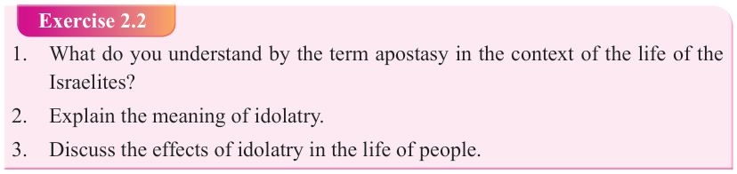
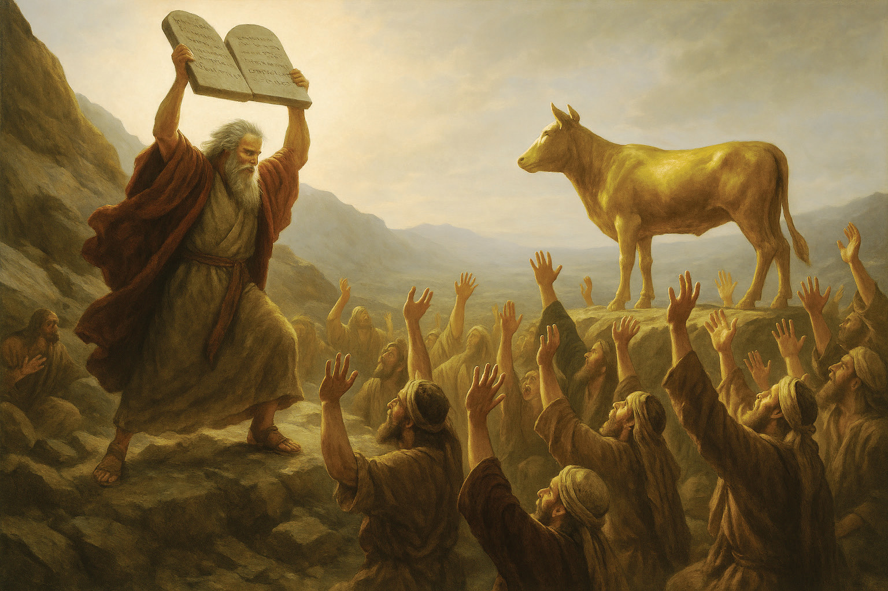

Form Two
Tanzania Institute of Education (TIE)


Bible Knowledge
36


Figure 2.3: Moses breaks the tables of the covenant
Observing the apostasy of His chosen people, the Lord God commanded Moses to go down from the mountain to meet the people because they had transgressed against the covenant. When Moses saw people worshipping the golden calf, he was enraged with anger and thrown the tables of the covenant and broke them, a sign that the covenant with God was broken. Then he ground the golden calf and mixed the powder with water and made people to drink. God Himself would separate the guilty with the innocent. While the guilty would perish from the water but the innocent would remain. Punishment occurred in the form of illness. On the same day the
Levites killed about 3,000 people as a punishment for this sin.
Exercise 2.2
1. What do you understand by the term apostasy in the context of the life of the
Israelites?
2. Explain the meaning of idolatry.
3. Discuss the effects of idolatry in the life of people.


Moses pleads for the people

Moses pleads to God for the people so that He would turn away His anger (Exodus
32:11-14). He said: “Israel are your own people, whom you brought from Egypt with great power and with strong hand. The Egyptians will mock you saying you brought them out of Egypt with the intention to kill them in the mountain. These are the people that belong to the promise you made to Abraham, Isaac and Jacob that you would make them a multitude and great nation.” Moses went to God to make atonement for the great sin Israel committed. The Lord punished them by sending to them a mysterious disease which killed the guilty Israelites.